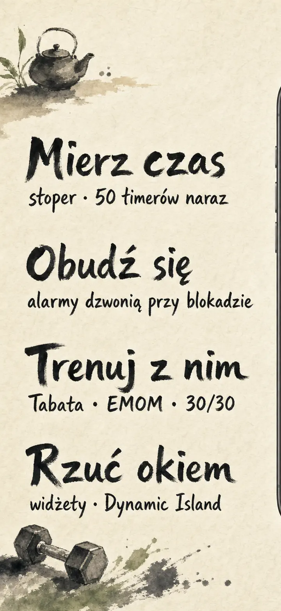
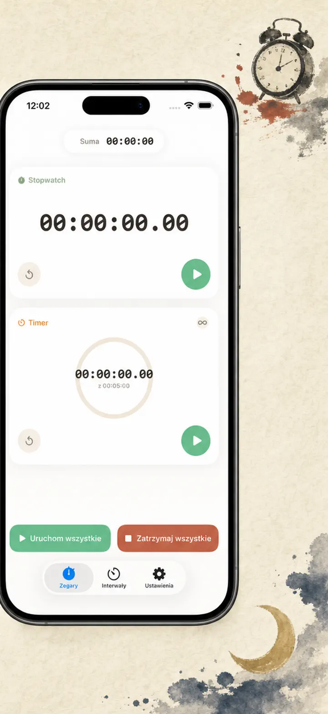
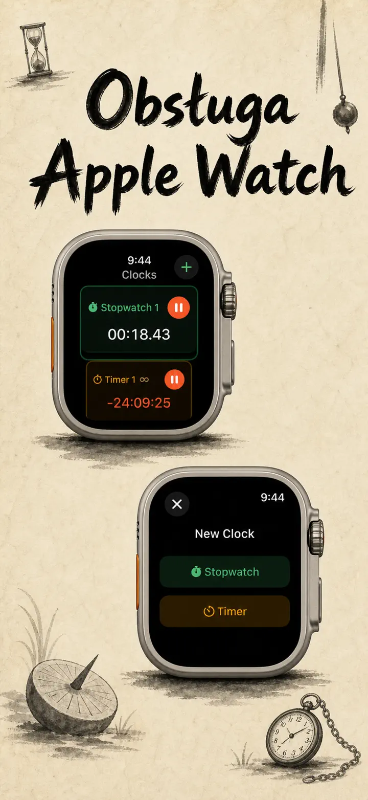
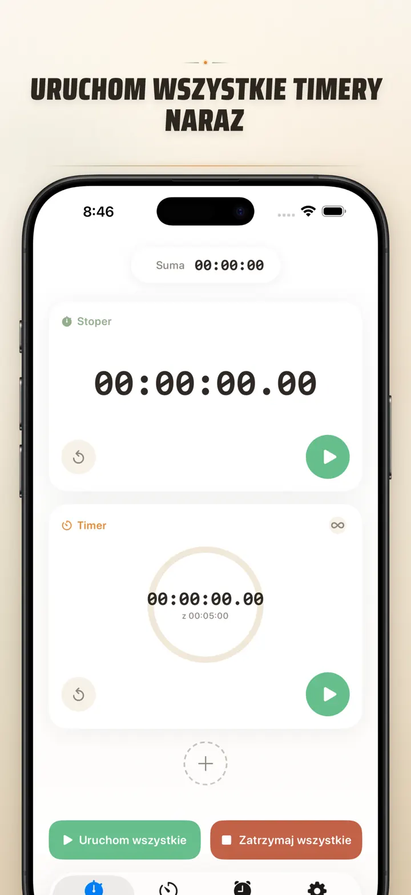
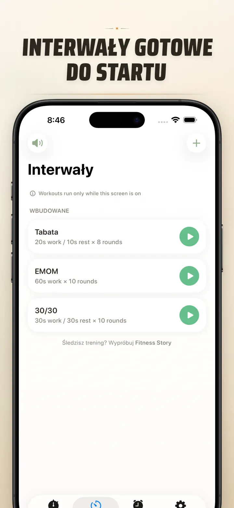
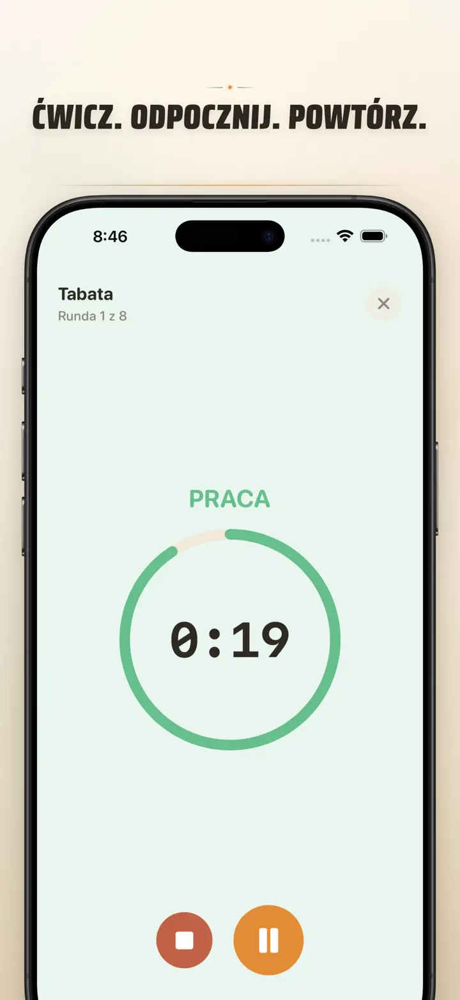
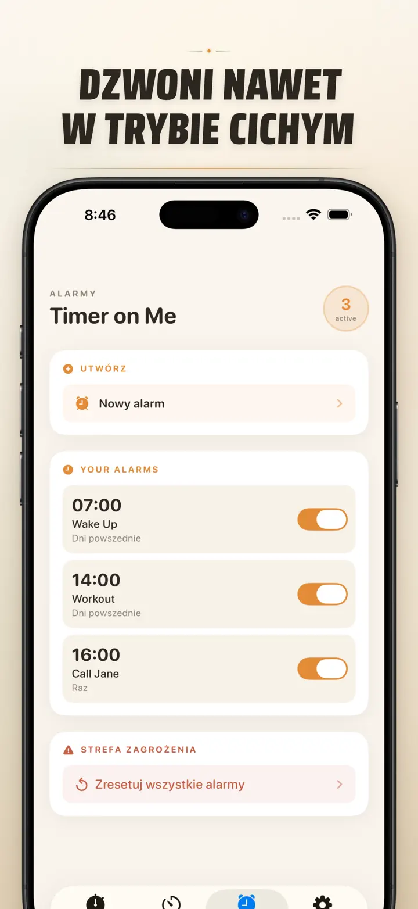

Timer on Me
Timer, Alarm, Stoper, HIIT
Teraz z alarmami z datą: jednorazowy alarm na dowolną datę i godzinę, obok alarmów cyklicznych, 50 timerów naraz, HIIT & Tabata i Apple Watch.
Pobierz w App Store
O aplikacji
Timer on Me to multi-timer i stoper dla iPhone'a, iPada i Apple Watch. Do 50 niezależnych timerów jednocześnie, precyzyjne treningi interwałowe i alarmy, które naprawdę dzwonią — nawet przy zablokowanym iPhonie lub zamkniętej aplikacji.
ALARMY
- Budziki i przypomnienia z własnymi nazwami i harmonogramami na dni tygodnia
- Napędzane AlarmKit — dzwonią nawet przy zablokowanym iPhonie lub zamkniętej apce
- Konfigurowalna drzemka (3 / 5 / 9 / 15 / 30 minut) albo bez drzemki
- Wybierz wbudowane dzwonki lub zaimportuj własne dźwięki
- Włączaj i wyłączaj jednym tapnięciem w dedykowanej zakładce Alarmy
TRENING I INTERWAŁY
- Gotowe presety Tabata, EMOM i 30/30 — dwa dotknięcia i startujesz
- Własny edytor interwałów: praca, odpoczynek i rundy w minutach i sekundach
- Pełnoekranowy tryb treningu z kolorami dla każdej fazy i opcją wyciszenia
- Pauza, pominięcie i wznowienie w trakcie sesji bez utraty postępu
APPLE WATCH
- Prawdziwa natywna aplikacja watchOS, nie tylko odbicie z telefonu
- Wiele stoperów i timerów naraz na nadgarstku
- Stoper z dokładnością do setnych części sekundy
- Dedykowane komplikacje tarczy do uruchomienia jednym dotknięciem
- Działa samodzielnie, nawet bez iPhone'a w pobliżu
50 TIMERÓW JEDNOCZEŚNIE
- Do 50 niezależnych timerów i stoperów w jednej sesji
- Uruchamiaj, zatrzymuj i zeruj pojedynczo lub grupami
- Automatyczne powtarzanie dla rund cyklicznych
- Timery liczą dalej po zerze, żeby śledzić czas dodatkowy
- Kolorowe paski postępu: żółty przy 50%, czerwony przy 10%
- Przeciągaj, by zmienić kolejność, nadawaj własne nazwy
NIEZAWODNE POWIADOMIENIA
- AlarmKit: alarmy dzwonią nawet gdy iPhone jest zablokowany lub aplikacja zamknięta
- Dynamic Island i Live Activity — postęp na jeden rzut oka
- Widżety na ekranie głównym: mały, średni, duży
- Wbudowane dźwięki: dzwonki, śpiew ptaków, retro telefony
- Podsłuchaj jednym dotknięciem przed wyborem
- Tryb "Nie wygaszaj ekranu" do długich sesji
PERSONALIZUJ I DZIEL SIĘ
- Pokazuj lub ukrywaj dziesiętne, sumy i procenty
- Zapisuj i nadpisuj presety, przywracaj je jednym dotknięciem
- Eksportuj do CSV, JSON lub zwykłego tekstu
- Dziel się z kolegami, uczniami lub trenerem
NA iPhone'A, iPADA I APPLE WATCH
- Układ dopasowany do każdego ekranu
- Split View na iPadzie
- 34 języki
IDEALNE DO
- HIIT, Tabata, CrossFit i trening obwodowy
- Rundy boksu, MMA i sportów walki
- Pomodoro, matura, egzaminy i nauka
- Parzenie herbaty, kawy, jajka na miękko, rosół i czas w piekarniku
- Joga, pilates, medytacja i ćwiczenia oddechowe
- Próby wystąpień i ćwiczenia na instrumencie
- Lekcje, warsztaty i zajęcia grupowe
- Gry planszowe i spotkania ze znajomymi
Pobierz Timer on Me i zapanuj nad każdą minutą — na siłowni, w pracy czy w domu.
Polityka prywatności: https://masawata.net/privacy-policy.html Warunki korzystania: https://www.apple.com/legal/internet-services/itunes/dev/stdeula/
Zrzuty ekranu






Timer on Me
Teraz z alarmami z datą: jednorazowy alarm na dowolną datę i godzinę, obok alarmów cyklicznych, 50 timerów naraz, HIIT & Tabata i Apple Watch.
Pobierz w App Store